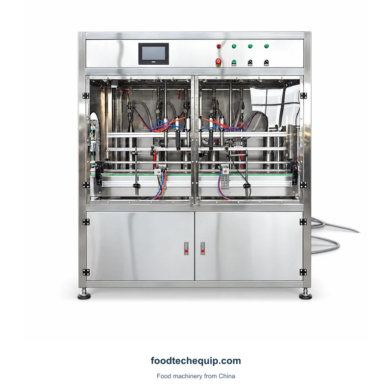
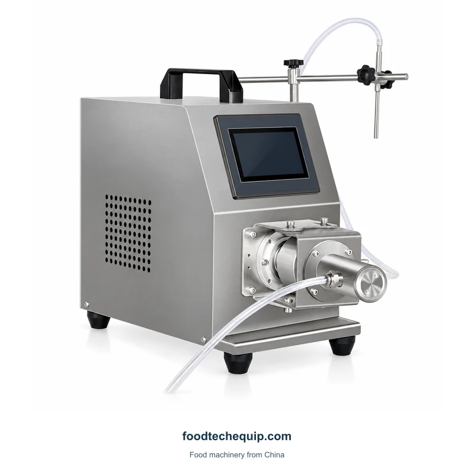

크게 보려면 이미지를 선택하십시오.
충전 설비
세라믹 펌프 액체 충전기
터치스크린과 조정 가능한 노즐을 갖춘 소형 세라믹 펌프 액체 충전 장치입니다.
- 충전 헤드 수DY-1
- 1
- 적용 가능한 병 높이DY-1
- 60 mm
- 적용 가능한 병 직경DY-1
- 4 mm
장비 선택 · 설치 안내 · 원격 지원
제품 정보 탐색 ↓이 장비를 워크플로우에 계획
액체 제조법, 충전 온도, 목표 수량 및 컨테이너 개방을 제공하십시오. 세라믹 펌프 및 노즐 배열을 논의할 때 세척 프로세스를 포함하십시오.
충전 또는 디스펜싱 어플리케이션 정의 ↗제품 & 포장
사양 & 구성
| 파라미터 | 값 | 단위 | 설정 |
|---|---|---|---|
| 충전 헤드 수 | 1 | — | DY-1 |
| 적용 가능한 병 높이 | 60 | mm | DY-1 |
| 적용 가능한 병 직경 | 4 | mm | DY-1 |
| 충전 속도 | 10-30 | 병/분 | DY-1 |
| 충전 볼륨 | 50-750 | mL | DY-1 |
이 작업이 프로세스에 어디에 맞는지
충전은 수신 형식에서 제품 수량을 설정합니다. 폐쇄는 별도의 작업입니다. 실제 용기와 폐쇄부를 식별하거나 유연한 패키지가 필요한지 여부를 명시한 다음 채워진 포장물이 채우는 위치를 떠나는 방법을 보여줍니다.
어플리케이션 & 실용적인 가이드
요구 사항에 대해 알려주십시오.
- 일관성, 온도 및 입자
- 컨테이너 도면 및 샘플
- 선택된 구성 및 필요한 속도
- 관심의 구성: DY-1
- 의도된 패키지 형식에서 필요한 생산 능력
- 사용 가능한 전원 공급 장치 및 목적지
계속 탐험하세요
카테고리 보기 ↗